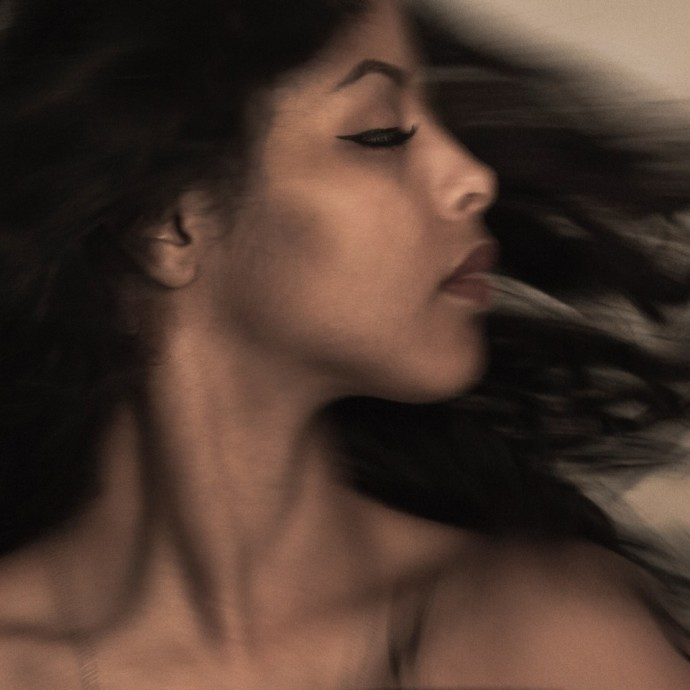
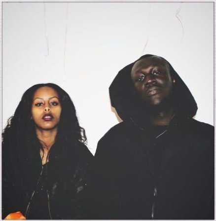
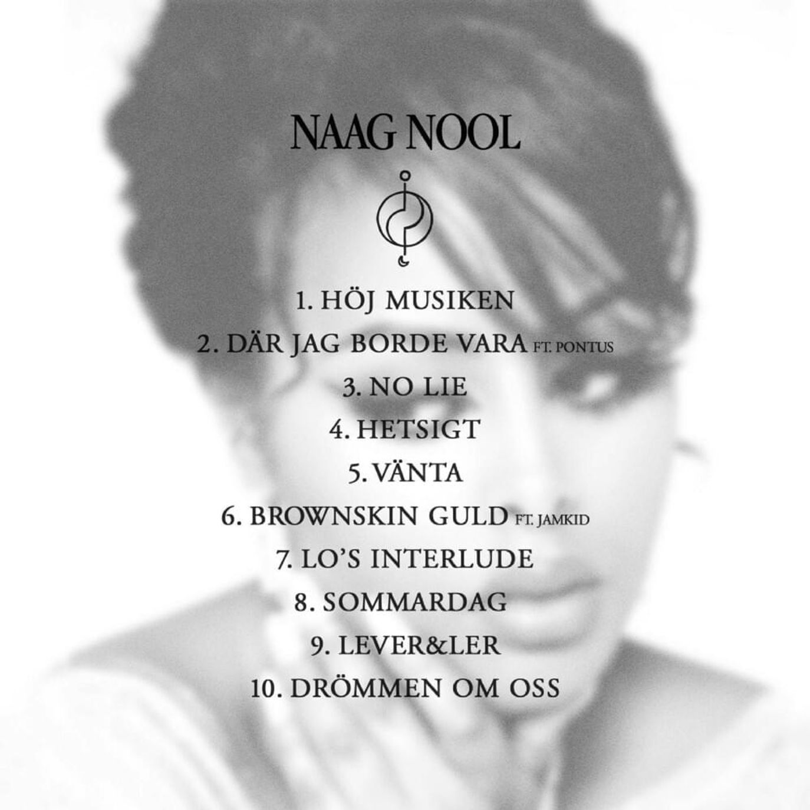
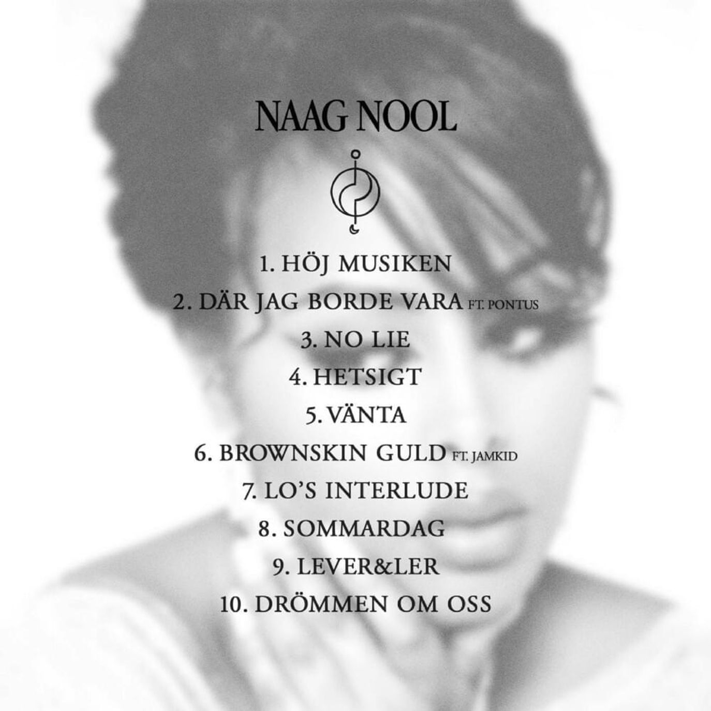

Sherihan
Release April 2016
Om Cherrie
- Cherries fulla namn är Sherihan Abdulle.
- Född i Norge, flyttade till Rinkeby när hon var 10 år.
- Cherrie är kusin med rapparna Imenella och Yasin
Cherries debutalbum Sherihan släpptes i april 2016 och nådde 16e plats på Sverigetoppslistan. Många av låtarna handlar om Rinkeby där hon tidigare varit bosatt, men det är även ett album som handlar om hjärtesorg, gemenskap, styrkan i samhörighet, att stötta varandra när livet gör ont. Albumet producerades av Leslie Tay och Amr Badr på skivbolaget Woah Dad!


Del 1
- Intro 2.0
- Aldrig Igen (må sådär)
- Låta Bli
- Lämna Han
- Mig Själv / Menat
- Ha Nolaato
Del 2
- Förut
- Tusen Stjärnor
- Sherihan
- Molnet (outro)
- Aldrig Igen (må sådär) feat. Stormzy
- Genombrottet kom när Cherrie släppte den samhällskritiskt smattrande förortsskildringen ”Tabanja” 2015.
- Nominerades till "Årets Nykomling" på Grammisgalan 2016. Vid Grammisgalan 2017 tilldelades hon Grammis för "Årets hiphop/soul".
- Den 6e juli 2017 var hon sommarpratare i Sveriges Radio.
 
